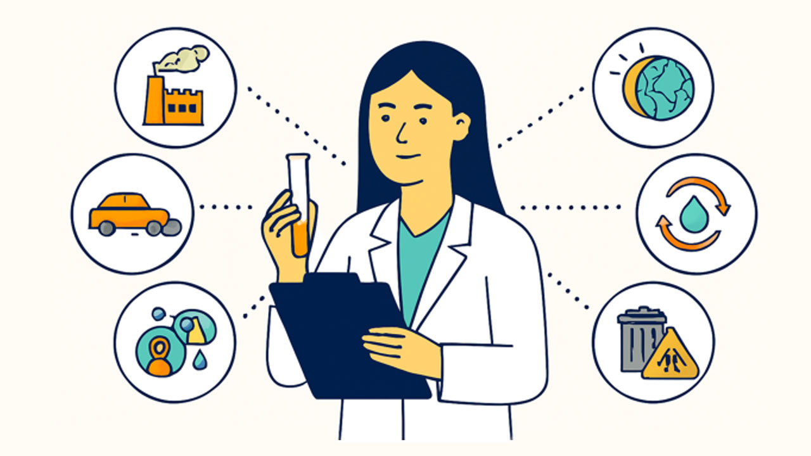
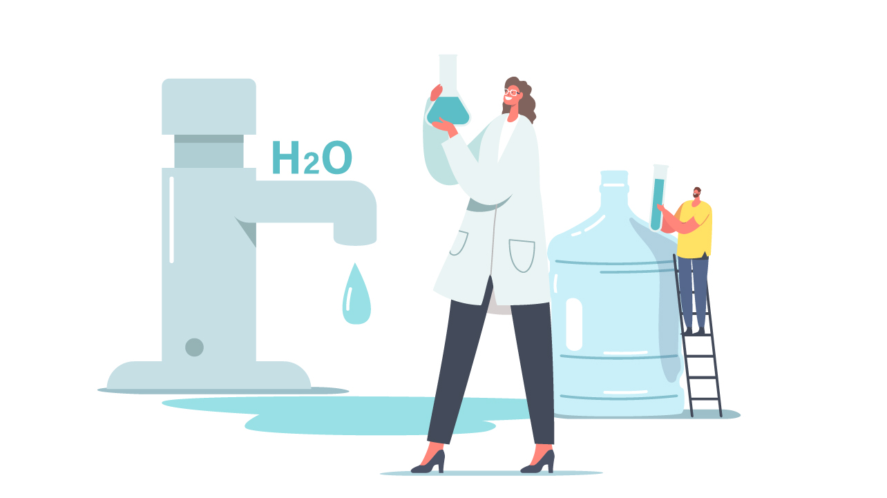
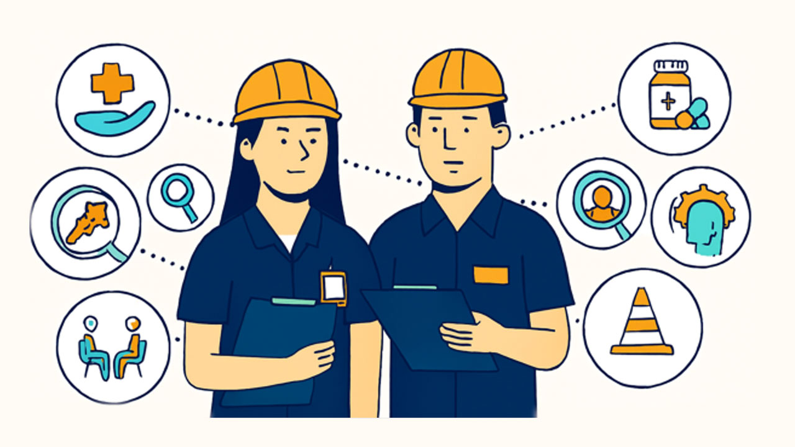
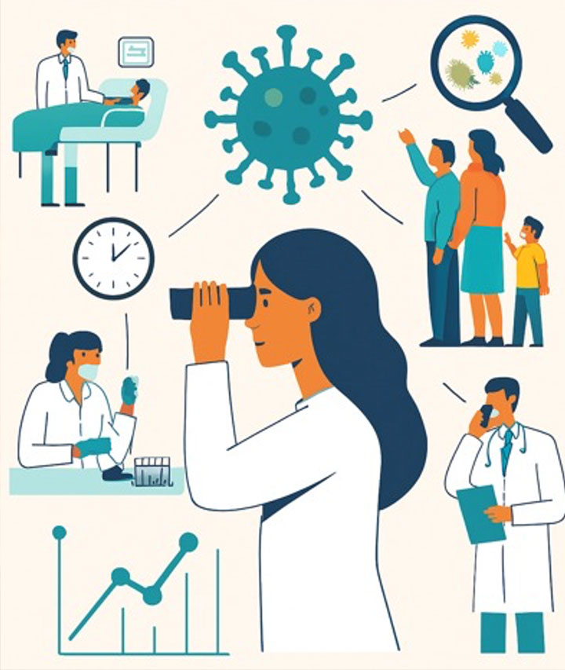
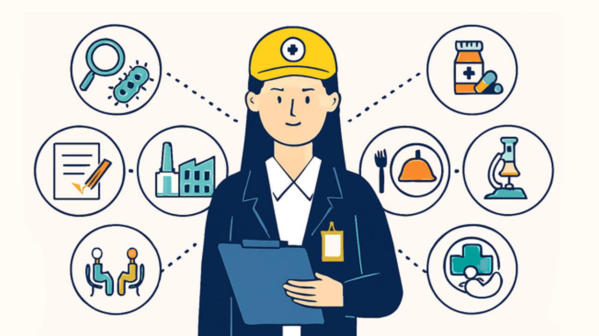
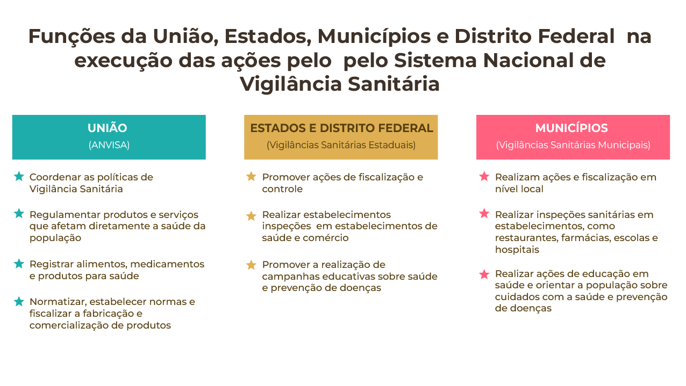

MÓDULO 1 | AULA 3 Sistema Nacional de Vigilância em Saúde
Componentes da vigilância em saúde
A vigilância em Saúde compreende a Vigilância em saúde ambiental; Vigilância em saúde do trabalhador; a Vigilância epidemiológica e a Vigilância sanitária, as quais serão detalhadas a seguir.
Vigilância em saúde ambiental

Conjunto de ações e serviços voltados para o conhecimento e monitoramento dos fatores determinantes e condicionantes do meio ambiente que afetam a saúde humana, tais como a qualidade do ar e da água para consumo humano e a presença de substâncias e contaminantes químicos no meio ambiente, e dos fatores de risco relacionados às doenças e agravos à saúde, visando a recomendação e adoção de medidas de promoção, proteção e prevenção da saúde da população. Os desastres e acidentes naturais e antropogênicos, a ocorrência de queimadas, o cenário de mudanças climáticas que podem afetar a saúde humana também são temas de interesse e atuação da Vigilância em Saúde Ambiental.

Na esfera federal, a Vigilância em Saúde Ambiental é organizada em três componentes:
- Vigilância da Qualidade da Água para Consumo Humano (Vigiagua)
- Vigilância em Saúde de Populações Expostas a Substâncias e Contaminantes Químicos (Vigipeq)
- Vigilância em Saúde de Populações Expostas a Poluentes Atmosféricos e Qualidade do Ar (Vigiar).
No entanto, as Unidades Federadas e os Municípios podem apresentar essas vigilâncias em diferentes estruturas, conforme realidade local.
Dentre as ações de Vigilância em Saúde Ambiental, destaca-se o papel da Vigipeq no desenvolvimento de ações de promoção, prevenção e atenção integral à saúde de populações expostas a substâncias químicas, que interferem na saúde humana, tendo o chumbo, mercúrio, os agrotóxicos, benzeno e amianto, como prioritários. No entanto, ressalta-se que a vigilância no território não deve se restringir a essas substâncias, sendo necessário o monitoramento de outras substâncias e contaminantes químicos, conforme realidade e características do território.
As ações da Vigipeq são de suma importância à vigilância epidemiológica das doenças e dos agravos à saúde humana associados aos fatores ambientais, em especial das intoxicações exógenas, agravo de notificação compulsória.
As intoxicações exógenas por substâncias químicas, incluindo agrotóxicos, gases tóxicos e metais pesados, são agravos de notificação compulsória, conforme Portaria GM/MS Nº 6.734, de 18 de março de 2025 [AL12.1](Brasil, 2025a), a serem registrados no Sistema de Informação de Agravos de Notificação (Sinan) em caso de suspeição ou confirmação. Informações detalhadas sobre a vigilância de casos de intoxicações exógenas podem ser encontradas no Capítulo 12 do Guia de Vigilância em Saúde, 6ª edição (Brasil, 2024b). Ressalta-se que a temática da vigilância das intoxicações exógenas será tratada detalhadamente durante este curso, na aula 4 do Módulo 3.
Conheça o Guia Vigilância em Saúde, 6ª edição elaborado pelo Ministério da Saúde. O guia é uma publicação fundamental do Ministério da Saúde, editada pela Secretaria de Vigilância em Saúde e Ambiente (SVSA/MS).
Um exemplo concreto da importância da Vigilância em Saúde Ambiental pode ser mais bem compreendido a partir dos resultados da pesquisa realizada pela Fiocruz na região atingida pelo rompimento da barragem da Vale, em Brumadinho, relatados no vídeo “Brumadinho: FIOCRUZ encontra metais pesados no organismo da população”.
A Vigilância em Saúde ambiental possui papel de destaque no monitoramento de áreas próximas a barragens de contenção de rejeitos minerais que podem contaminar o ambiente e causar impactos na saúde da população. Acrescentam-se a essa questão os impactos de alta magnitude na saúde da população, na infraestrutura de serviços de saúde, na economia, no ambiente, dentre outros, causados pelo rompimento de barragens de rejeitos da mineração, como os desastres ocorridos nas barragens de rejeitos da Samarco, em Mariana, em 2015, e da Vale/AS, em Brumadinho, em 2019, em Minas Gerais.
Frente ao desastre ocorrido em Brumadinho, foi necessária uma importante articulação intersetorial e intrasetorial nas três esferas de governo para tomada de decisão e execução das ações de Vigilância em Saúde Ambiental, voltadas para a caracterização do território, o monitoramento da qualidade da água para consumo humano, a análise da lama para avaliação dos teores de metais nos rejeitos, a realização de análises epidemiológicas para estabelecer o perfil de agravos e doenças, com destaque para as intoxicações por metais pesados, transtornos mentais e acidente de trabalho, o qual será retomado no item Vigilância em Saúde do Trabalhador.
Destaca-se também o papel das instituições de pesquisa na identificação à presença de metais em populações afetadas pelo rompimento de barragens de rejeitos, fornecendo informações fundamentais para a compreensão dos efeitos de rompimentos de barragens de mineração na saúde da população para a Vigilância em Saúde Ambiental.
O vídeo “Saúde ambiental, conceito e riscos I” é um recurso excelente para aprofundar o entendimento sobre a Vigilância em Saúde Ambiental.
Vigilância em Saúde do Trabalhador e da Trabalhadora

Conjunto de ações para a promoção, prevenção da morbimortalidade e redução de riscos à saúde das trabalhadoras e dos trabalhadores, realizadas de forma integrada de modo a interferir nas doenças e agravos e seus fatores determinantes resultantes dos modelos de desenvolvimento econômico, processos produtivos e atividades relacionadas ao trabalho.
Dentre as ações de Vigilância em Saúde do trabalhador, destacam-se:
- Realização de ações de vigilância epidemiológica voltadas para a detecção de doenças e agravos relacionados ao trabalho.
- Condução de busca ativa de casos.
- Notificação dos agravos relacionados ao trabalho.
- Investigação dos casos identificados.
- Confirmação do nexo entre o agravo e o trabalho.
- Encerramento adequado dos casos.
- Monitoramento da morbimortalidade relacionada ao trabalho.
Ressalta-se que as Doenças e Agravos Relacionados ao trabalho[KB18.1], tais como os acidentes de trabalho; câncer relacionado ao trabalho; transtornos mentais relacionados ao trabalho fazem parte da Lista Nacional de Notificação Compulsória de Doenças, Agravos e Eventos de Saúde Pública, conforme listadas na Portaria GM/MS Nº 6.734, de 18 de março de 2025[AL19.1].
É importante destacar o papel da PNSTT, instituída pela Portaria nº 1.823, de 23 de agosto de 2012[AL20.1], para o desenvolvimento da atenção integral à saúde do trabalhador, tendo como ênfase a vigilância, objetivando a promoção e a proteção da saúde dos trabalhadores e das trabalhadoras e redução da morbimortalidade da população trabalhadora em decorrência dos modelos de desenvolvimento e dos processos produtivos.
Uma das estratégias da PNSTT é a estruturação da Rede Nacional de Saúde do Trabalhador (Renast) como parte integrante da Rede de Atenção à Saúde (RAS) do SUS, a qual é composta, principalmente, pelos Centros de Referência em Saúde do Trabalhador (CEREST). Uma das atribuições do CEREST é o desenvolvimento de ações de Vigilância em Saúde do trabalhador, tais como a realização de notificação e investigação de doenças e agravos relacionados ao trabalho, identificação de riscos no ambiente de trabalho, elaboração do perfil de morbimortalidade.
- Assista ao vídeo "A RENAST, os CERESTs e a importância das notificações"
Em relação aos rompimentos de barragem de Mariana e Brumadinho, detalhados no item Vigilância em Saúde Ambiental, esses tipos de acidentes são classificados como acidentes de trabalho ampliado, por terem ultrapassado os limites de responsabilidade das empresas, causando danos imediatos e futuros à saúde dos trabalhadores e à população em geral, bem como danos ambientais (Ramos et al., 2020).
O desastre de Brumadinho é considerado o maior acidente de trabalho ampliado do Brasil, ocasionando a morte de 259 pessoas, sendo a maioria trabalhadores da Vale/SA e terceirizados.
Vigilância epidemiológica

Conjunto de ações de monitoramento dos fatores determinantes e condicionantes da saúde, visando a recomendação e adoção de medidas para a prevenção e o controle de doenças transmissíveis e não transmissíveis e de agravos à saúde. Originalmente vinculado aos conceitos de isolamento e quarentena, no período que compreende a Idade Média e o Século XVIII, o termo vigilância tem passado por um processo de evolução no que diz respeito a concepções, estrutura e perspectivas de atuação, se consolidando como um instrumento de saúde pública. Pautada inicialmente em ações voltadas para doenças transmissíveis, como a varíola e a febre amarela, e na execução de medidas "policialescas” (relativas à polícia), é importante destacar que na atualidade as ações da vigilância epidemiológica não se restringem às doenças e agravos de notificação compulsória que constam na Lista Nacional de Notificação Compulsória de Doenças, Agravos e Eventos de Saúde Pública (Albuquerque et. al, 2002). São exemplos de doenças e agravos objetos da vigilância epidemiológica:
- Dengue;
- Gripe;
- COVID-19;
- Hipertensão;
- Diabetes;
- Câncer relacionado ao trabalho;
- Acidente de trabalho;
- Acidentes com animais peçonhentos;
- Intoxicação exógena, dentre outras.
As ações de vigilância epidemiológica compreendem a coleta de dados, produção de informações, realização de investigações e de levantamentos necessários para subsidiar a programação e avaliação das medidas de controle de doenças e de situações de agravos à saúde.
A definição da organização e das atribuições dos serviços que executam as ações de vigilância, bem como a promoção da sua implementação e coordenação é de competência do Ministério da Saúde. Considerando a descentralização do SUS, compete à esfera estadual a coordenação e a execução, em caráter complementar, das ações e serviços de vigilância epidemiológica. No entanto, as ações de vigilância epidemiológica são realizadas nos municípios, onde ocorrem os problemas de saúde e emergem as situações de interesse da saúde pública, visando melhor resolução dos problemas de saúde e a realização de ações de controle de forma rápida e ágil.
Assista ao vídeo “Aula 21 - Vigilância em Saúde (Parte 1)”, do CONASEMS, e compreenda a importância e o funcionamento da Vigilância em Saúde no SUS, com destaque para o papel da Vigilância Epidemiológica.
Na aula sobre Vigilância Epidemiológica e gestão da Informação do Módulo 3 - Toxicologia Clínica aplicada aos Metais, você terá mais informações sobre a vigilância epidemiológica relacionada à intoxicação por metais.
Vigilância sanitária

Conjunto de ações que visam a prevenção, redução ou eliminação dos riscos à saúde, bem como intervir nos problemas sanitários que ocorram em consequência da produção, circulação e descarte de bens e prestação de serviços, em todas as suas etapas, que estejam direta ou indiretamente relacionados com a saúde. Portanto, cabe à Vigilância Sanitária o estabelecimento e monitoramento do cumprimento de normas para a produção, uso e circulação de produtos que apresentam algum tipo de risco para a saúde das pessoas. Tais riscos podem ser classificados em cinco categorias:
Água (consumo e mananciais hídricos), esgoto, lixo (doméstico, industrial, hospitalar), vetores e transmissores de doenças (mosquitos, barbeiros, animais sinantrópicos), poluição do ar, do solo e de recursos hídricos, transporte de produtos perigosos, etc.
Processo de produção, substâncias, intensidades, carga horária, ritmo e ambiente de trabalho.
Transporte, alimentos, substâncias psicoativas, violências, grupos vulneráveis, necessidades básicas insatisfeitas.
Medicamentos, infecção hospitalar, sangue e hemoderivados, radiações ionizantes, tecnologias médico-sanitárias, procedimentos e serviços de saúde.
Creches, escolas, clubes, hotéis, motéis, portos, aeroportos, fronteiras, estações ferroviárias e rodoviárias, salão de beleza, saunas, etc.
Na prática, a Vigilância Sanitária cuida da segurança de alimentos, medicamentos, produtos e serviços consumidos ou utilizados no dia a dia, garantindo que não afetem a saúde da população. O controle das condições de embalagem, estocagem, transporte e armazenamento de alimentos; das condições de higiene de restaurantes, estabelecimentos de saúde, farmácias, salões de beleza, creches e asilos; e o respeito às normas de segurança oferecidas aos trabalhadores de indústrias são alguns exemplos de atividades realizadas pela Vigilância Sanitária.
O Sistema Nacional de Vigilância Sanitária é formado pela Agência Nacional de Vigilância Sanitária (Anvisa), no âmbito nacional, pelas Vigilâncias Sanitárias Estaduais, Vigilâncias Sanitárias Municipais, Sistema Nacional de Laboratórios de Saúde Pública, no que diz respeito à vigilância sanitária; e sistemas de informação de vigilância sanitária. Cada entidade integrante do Sistema Nacional de Vigilância Sanitária possui determinadas funções conforme a esfera de governo.

Assista ao vídeo “Aula 22 - Vigilância em Saúde (Parte 2)” e aprofunde seu entendimento sobre a Vigilância em Saúde no SUS, com foco nas atuações da Vigilância Ambiental, da Vigilância Sanitária e da Vigilância em Saúde do Trabalhador.